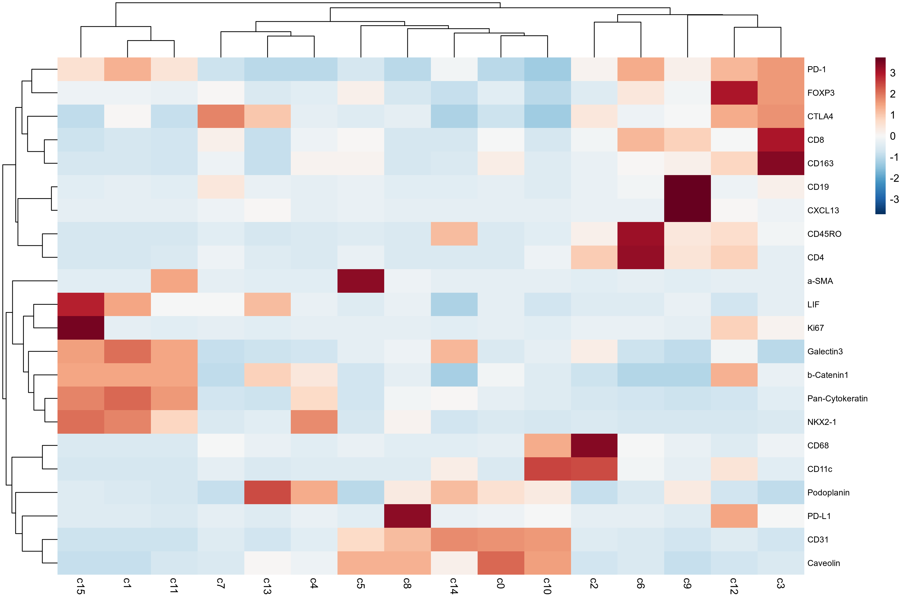
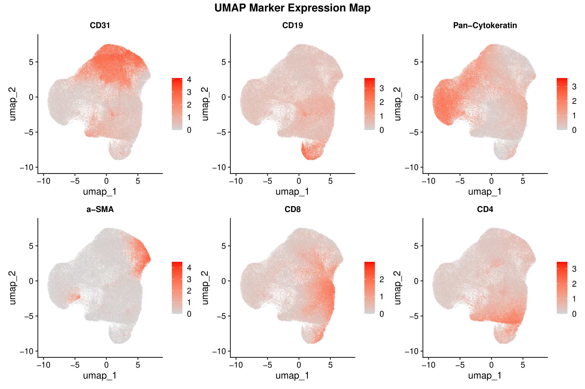
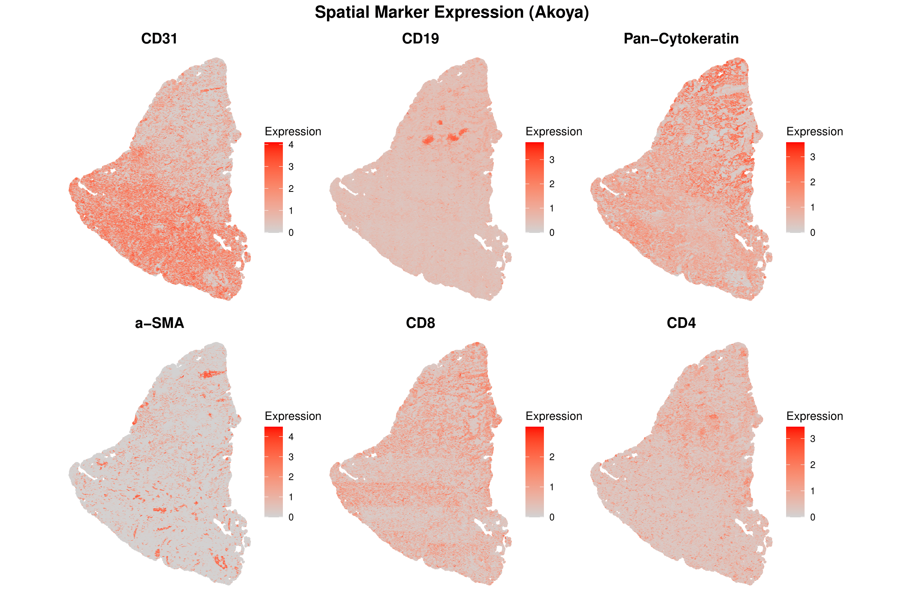
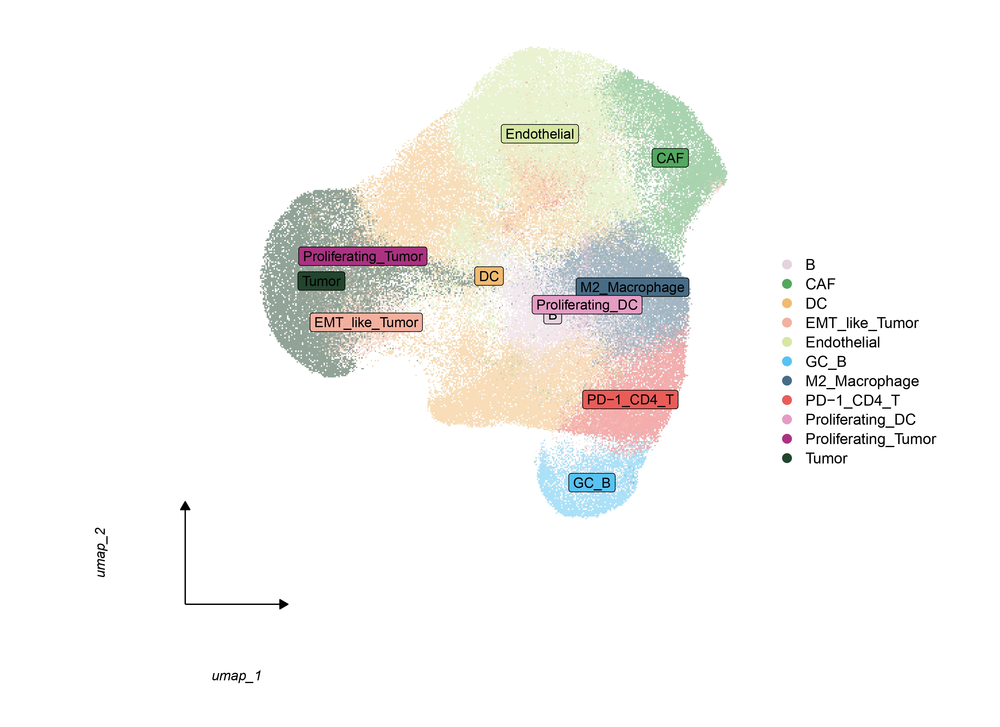
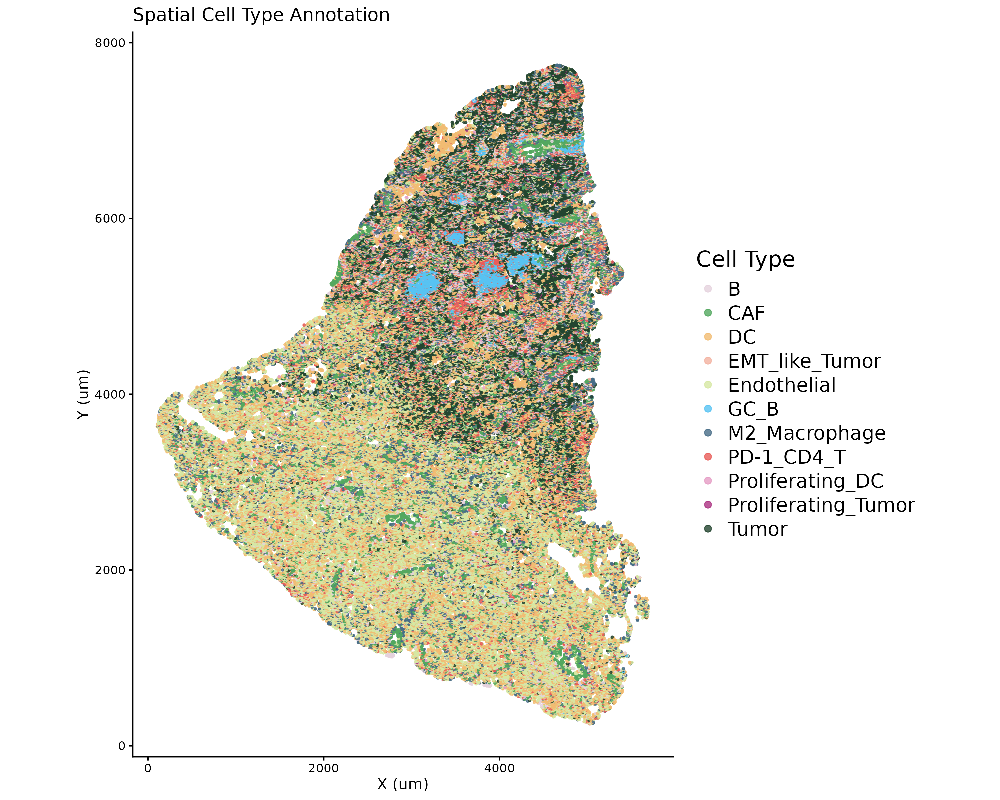

This tutorial demonstrates how to identify cell types and annotate clusters in spatial proteomics data using Sphinx.
2. Identify Marker Proteins
# Identify top marker proteins for each cluster
top5 <- find_top_markers(
codex.obj,
assay = "RNA",
save_path = "top5proteins.csv"
)
# View top markers
head(top5)3. Visualize Marker Expression
Violin Plots
# Create violin plots for all detected proteins
plot_marker_violin(
codex.obj,
markers = rownames(codex.obj[["RNA"]]),
assay = "RNA",
save_path = "allmarker.png"
)
Violin plots showing expression distribution of marker proteins across clusters.
Marker Heatmap
# Create heatmap of top marker expression
plot_marker_heatmap(
codex.obj,
top_markers = top5,
save_path = "marker_heatmap.png"
)
Heatmap plots showing expression of marker proteins across clusters.
Visualize marker expression in UMAP space
plot_umap_markers(codex.obj,
markers = c("CD31", "CD19", "Pan-Cytokeratin",
"a-SMA","CD8","CD4"))
Heatmap plots showing expression of marker proteins across clusters.
Visualize marker expression in spatial coordinates
plot_spatial_markers(codex.obj,
markers = c("CD31", "CD19", "Pan-Cytokeratin",
"a-SMA","CD8","CD4"),
point_size = 0.5)
Heatmap plots showing spatial distribution of marker proteins across clusters.
4. Cell Type Annotation
# Define cluster to cell type mapping
cluster_ids <- c(0, 1, 2, 3, 4, 5, 6, 7，8，
9，10，11，12，13，14，15)
celltype_labels <- c(
"Endothelial", "Tumor", "DC", "M2_Macrophage","Tumor","CAF","PD-1_CD4_T","B","Endothelial",
"GC_B", "DC", "EMT_like_Tumor", "Proliferating_DC","Endothelial","Endothelial","Proliferating_Tumor"
)
# Apply cell type annotations
codex.obj <- annotate_celltypes(
codex.obj,
cluster_ids = cluster_ids,
celltype_labels = celltype_labels,
cluster_column = "RNA_snn_res.0.5"
)
# Check annotation results
table(codex.obj$celltype)5. Visualize Annotated Results
Annotated UMAP
# Create UMAP colored by cell types
plot_annotated_umap(
codex.obj,
save_path = "umap_by_celltype.png"
)
UMAP visualization colored by annotated cell types.
Spatial Distribution
# Visualize spatial distribution of cell types
plot_spatial_distribution(
codex.obj,
save_path = "celltype_spatial_plot.png"
)
Spatial distribution of annotated cell types across tissue coordinates.